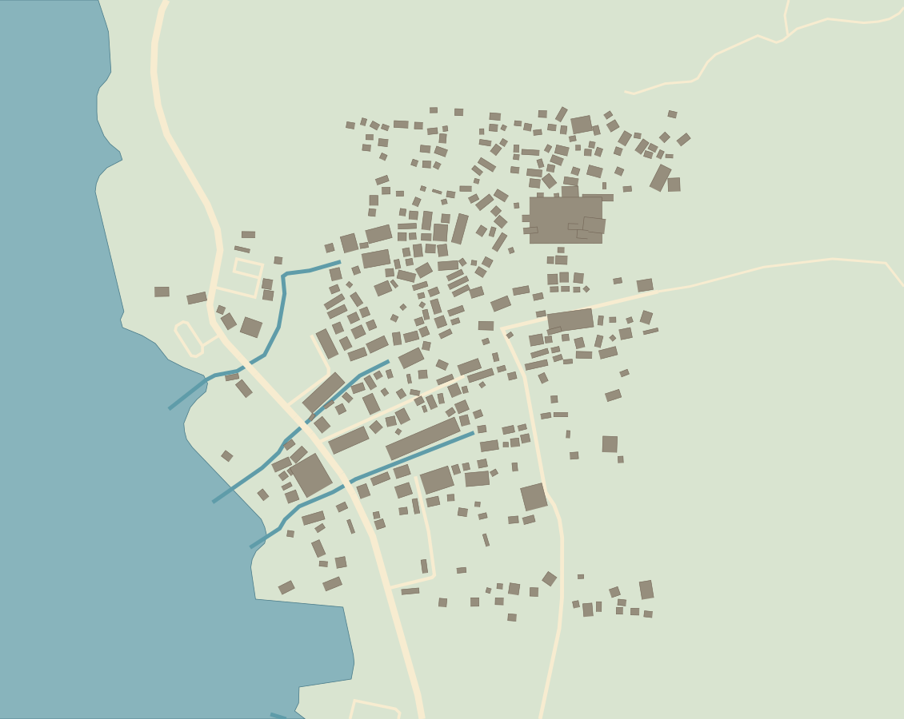
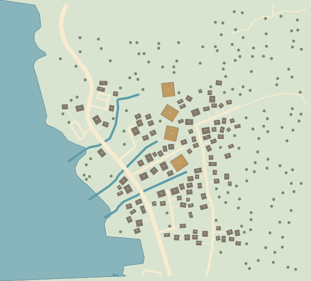

G · 陆巷源域

灰色：Overture原足迹的方位与占地概括；浅色：OSM道路；蓝色：OSM湖岸/水道。C · 连续体素样区

编号：完整房院地块；金色：类型化院落组；绿点：设计树位。未定位古建不冒名落位。图幅不同，均为米制坐标。距离压缩作用于锚点与网络；每座入选屋舍按完整构件重新生成。源图非实测古村边界。

灰色：Overture原足迹的方位与占地概括；浅色：OSM道路；蓝色：OSM湖岸/水道。
编号：完整房院地块；金色：类型化院落组；绿点：设计树位。未定位古建不冒名落位。